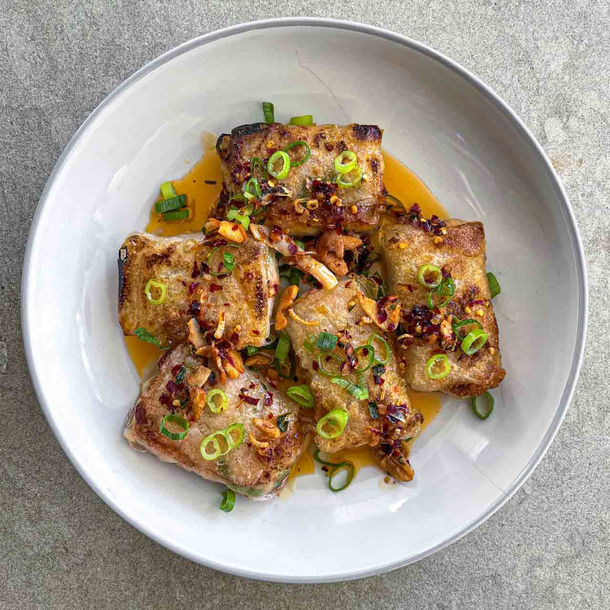

Shrimp Rice Paper Dumblings

Description
Shrimp Rice Paper Dumblings
Ingredients
- 1 lb shrimp
- Asian chives
- garlic
- ginger
- 1 tbsp cornstarch
- 1/4 tsp salt
- 1/4 tsp pepper
- 1 tbsp soy sauce
- 1 tbsp sesame oil
Steps
- Preheat oven to 400 degrees
- Mince chives, garlic, ginger and add to a bowl
- Add spices to bowl and mix
- Dampen rice paper for ~30sec and wrap filling
- Brush neutral oil onto both sides of dumplings
- Bake for 7 minutes on each side